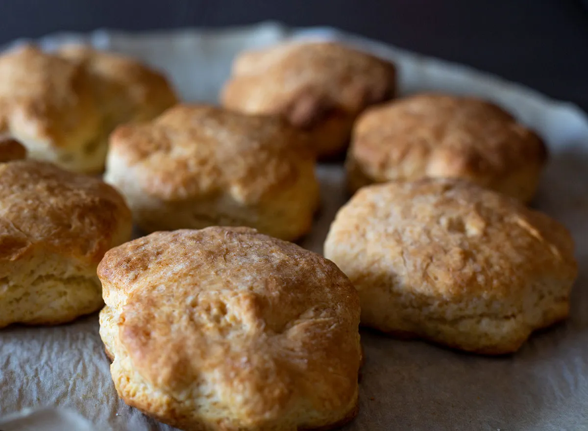

HAMCHEESE BISCUIT

Incredients
- 1 can pre-made biscuits
- 8 eggs
- 8 slices deli ham
- 2 cups shredded cheddar cheese
- 1 scallion, sliced thin for garnish (optional)
Directions
- Preheat the oven to 350 degrees Fahrenheit.
- Heavily grease a standard, 12-cup muffin tin (the top, too).
- Divide the eight biscuits into the cups and press them down and up into the sides of the cup. Flatten to make sure there is a big well.
- Rip the ham slice into a few pieces and lay them into the well. It's good if it hangs out as that will provide some yummy, crispy edges.
- Carefully crack an egg into each well.
- Bake for 20 minutes.
- At the 20-minute mark, sprinkle the cheese on the tops of the eggs and bake for a few more minutes.
- Carefully remove from the tin and serve with sliced scallions.